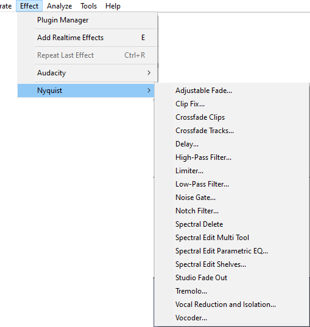

Effect Menu: Nyquist
- A wide range of additional Nyquist effect, generation and analysis plugins can be obtained from Nyquist Plugins on our Audacity Support site.
- Nyquist effects support saving of user presets but do not yet support import/export of presets from/to other machines.
- 
| Some Nyquist plugins could crash while processing very long audio selections (typically an hour or more). This is due to the plugin using a large amount of memory and is a known issue in Audacity's current Nyquist implementation. Try using the plugin on shorter selections instead. |
Nyquist effects
Nyquist Nyquist]plugins provide most of the optional effects underneath the divider in the Effect menu. They are also used to provide some of Audacity's built-in audio generators and analysis tools.
The button in most Nyquist effect dialogs opens a "Nyquist Output" window containing any informational or error output provided by the effect. This is primarily of use when writing or editing Nyquist plugins. After pressing in this window, the effect or other chosen action is attempted just as it would be if pressing OK in the effect instead of using the Debug button.
For detailed instructions on installing Nyquist plugins for Audacity see: Windows, Mac or Linux
To load the new effects into Audacity so they are available in the menu, use the Plugin Manager: Effects, Generators and Analyzers dialog.
| Advanced users can adapt Nyquist effects and write completely new ones. See the the Nyquist page for further information. |
Nyquist plugins included in Audacity
The following sample Nyquist plugins are included in released builds of Audacity:
Adjustable Fade
Launches a dialog box where you can choose the shape of the fade in or fade out to be applied. You can also create fades to and from other than silence or full volume. An example of this might be a fade in from 20% of the original volume to 80% of the original volume.
Clip Fix
Attempts to reconstruct clipped regions by interpolating the lost signal.
Crossfade Clips
Applies a simple crossfade to a selected pair of clips in a single audio track.
Crossfade Tracks
Applies a crossfade to a selected region of a pair of tracks.
Delay
A configurable delay effect with variable delay time and pitch shifting of the delays.
High-Pass Filter
Passes frequencies above its cutoff frequency and attenuates frequencies below its cutoff frequency; this can be used to reduce low frequency noise.
Limiter
Limiter passes signals below a specified input level unaffected or gently reduced, while preventing the peaks of stronger signals from exceeding this threshold. Limiting is a type of dynamic range compression. Mastering engineers often use limiting combined with make-up gain to increase the perceived loudness of an audio recording during the audio mastering process.
Low-Pass Filter
Passes frequencies below its cutoff frequency and attenuates frequencies above its cutoff frequency; this can be used to reduce high pitched noise.
Noise Gate
Use the Noise Gate to reduce the level of sound below a specified threshold level.
A noise gate is a kind of "dynamics processor" that allows audio above a specified threshold level to pass through unaffected (gate "open"), and stops or reduces sounds below the threshold level (gate "closed").
Notch Filter
Greatly attenuate ("notch out") a narrow frequency band. This is a good way to reduce mains hum or a whistle confined to a specific frequency with minimal damage to the remainder of the audio.
Nyquist Prompt
Launches a dialog where you can enter Nyquist commands. Nyquist is a language for producing and processing audio.
Spectral Delete
The Spectral Delete effect acts on a spectral selection to delete a spectral selection from the audio.
Spectral edit multi tool
If a fully defined spectral selection has been made, choosing Spectral edit multi-tool applies the appropriate filter for the selection. See Spectral edit multi tool for more information.
Spectral edit parametric EQ
If a fully defined spectral selection has been made, the effect applies a band cut or band boost according to the value you enter in the "Gain (dB)" control. See Spectral edit parametric EQ for more information.
Spectral edit shelves
If a fully defined spectral selection has been made, the effect applies a low shelf filter, high shelf filter or combined low and high shelf filter according to the value you enter in the "Gain (dB)" control. See Spectral edit shelves for more information.
Studio Fade Out
Produces a smooth and musical sounding fade out, by applying a sinusoidal fade with a progressive low-pass filter from full spectrum at the start of the selection to 100 Hz at the end.
Tremolo
Modulates the volume of the selection at the depth and rate selected in the dialog. The same as the tremolo effect familiar to guitar and keyboard players.
Vocal Reduction and Isolation
Attempts to remove or isolate center-panned audio from a stereo track. Vocals are often (but not always) recorded in this way. The classic method achieves this by subtracting one channel from the other, but the result will be (dual) mono (this method can be found under the Actions menu in this effect as "Remove Center Classic (Mono)" and is a quick way to remove the center if only mono is needed). All other "Remove" options in this effect preserve the stereo image
Vocoder
Vocoder synthesizes a modulator (usually a voice) in the left channel of a stereo track with a carrier wave in the right channel to produce a modified version of the left channel. Vocoding a normal voice with white noise as provided in the effect will produce a robot-like voice for special effects. Other carriers can be used for subtly different voices. Vocoder can only be applied to unsplit stereo tracks.